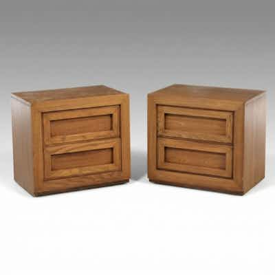

PASSPair of Thomasville Furniture Woodfield Collection Two-Drawer Nightstands
Pair of Thomasville Furniture 'Woodfield' collection two-drawer oak nightstands (parsons/c
38 min left
Current bid$60 · 10 bids
Est. value$63
Your max bid$0
Margin at bid−$209
Details & price history →